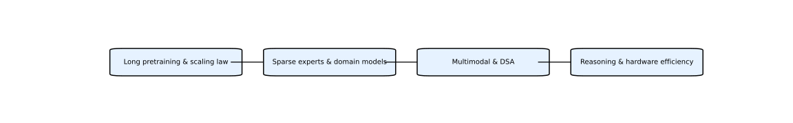

DeepSeek 是一家致力于开源大模型的公司，其系列研究面向长期规模化预训练、稀疏模型、高性能代码与数学推理以及多模态理解。以下按主题总结主要论文与报告。
这一类包括 DeepSeek LLM 和 DeepSeekMoE，前者通过构建 2 万亿 token 规模的数据集并研究 Scaling Law 推动开源模型规模化【233822673875642†L71-L85】；后者提出专家隔离与负载均衡策略，在不增加计算开销的情况下提升稀疏专家模型性能【400596717938453†L50-L104】。
DeepSeek 推出了 Coder、Math、Prover、VL 等特化模型，分别面向代码生成、数学推理、定理证明以及视觉‑语言理解；同时通过 VL2 等扩展了多模态范围。
V2/V3 系列通过多头潜在注意力、动态稀疏注意力 (DSA) 和 RL 任务合成提升长上下文和代理能力；R1 和 NSA 聚焦强化学习奖励设计和硬件对齐的稀疏注意力，使模型更适合复杂推理任务。

DeepSeek 的技术路线分为四个阶段，逐步提升模型规模、架构复杂度和任务覆盖范围：
构建 2 万亿 token 数据集并研究 7B/67B 模型的 scaling law，通过 SFT 和 DPO 推出首代 DeepSeek Chat【233822673875642†L71-L85】。
推出 DeepSeekMoE 以专家隔离策略扩展模型规模，并开发 Coder、Math、Prover 等任务特化模型，大幅提升代码、数学和定理证明能力。
通过 VL/VL2 融入视觉编码器，在 V2/V3 系列中引入多头潜在注意力 (MLA) 与动态稀疏注意力 (DSA)，结合强化学习任务合成和专家微调提升长上下文推理。
最新工作如 DeepSeek‑R1、Native Sparse Attention 和 V3.2/GRM 专注硬件对齐的稀疏注意力、长序列推理和通用奖励建模，为 Agentic Intelligence 奠定基础。
以下流程图用英文标签概括 DeepSeek 路线的四个阶段，便于快速把握核心重点：

下表列出各论文的 Markdown 分析（内含不少于十对问答）以及对应的 HTML 页面。
| 名称 | Markdown 分析 | HTML 页面 |
|---|---|---|
| DeepSeek LLM: Scaling Open‑Source Language Models with Longtermism | deepseek_llm.md | deepseek_llm.html |
| DeepSeekMoE: Towards Ultimate Expert Specialization | deepseek_moe.md | deepseek_moe.html |
| DeepSeek‑Coder 系列 | deepseek_coder.md | deepseek_coder.html |
| DeepSeekMath 系列 | deepseek_math.md | deepseek_math.html |
| DeepSeek‑VL / VL2 | deepseek_vl.md | deepseek_vl.html |
| DeepSeek‑V2 | deepseek_v2.md | deepseek_v2.html |
| DeepSeek‑Prover 系列 | deepseek_prover.md | deepseek_prover.html |
| DeepSeek‑R1 与 NSA | deepseek_r1_nsa.md | deepseek_r1_nsa.html |
| DeepSeek‑V3 / V3.2 | deepseek_v3.md | deepseek_v3.html |
| Generalist Reward Modeling & 推理时扩展 | deepseek_grm.md | deepseek_grm.html |